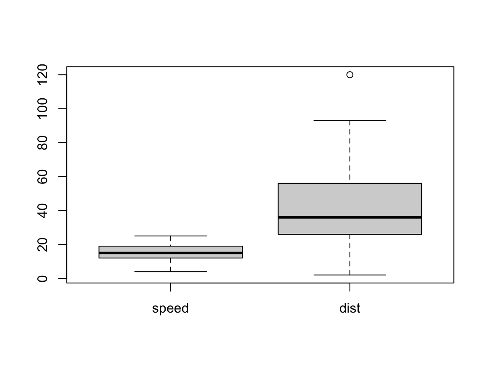

1+1
## [1] 2Einführung in R
Skript zur Vorlesung
1. Getting Started
Diese Seite wird begleitend zur Vorlesung “Einführung in R†vom 28.10.2024 genutzt. Gleichzeitig gilt das Skript auch als Übung 7.
2. R Konsole als Rechner
Eine R Konsole kann als Rechner verwendet werden. Untenstehend finden Sie eine Konsole mit dem Inhalt1+1. Sobald ein grüner Pfeil und Run Code erscheint, ist WebR geladen und bereit. Mit Run Code kann der Text - oder Code - in der Konsole ausgeführt werden.
Drücken Sie Run Code.
Nach Ausführen des Codes wird unter der Konsole das Resultat - der Output - angezeigt. Die Zahl in Klammern, also [1] beschreibt die Zeilennummer. Die Zahl danach, also 2, zeigt den Output.
Der Code in der Konsole kann gelöscht und durch anderen Code ersetzt werden. Es können auch andere Operatoren (z.B. -, / oder *) oder Funktionen (wie sqrt) genutzt werden. (Am linken Rand wird die Zeilennummer des Codes angegeben. Diese Zahl kann nicht geändert werden. Sie dient bei langem Code dazu sich zu orientieren.)
Geben Sie in die Konsole verschiedene mathematische Operationen ein:
\(1+1+1\)
\(5*5\)
\(3*(4+3)\)
\(1000/10^2\)
\(\sqrt{144}\)
\(\sin60\)
Schauen Sie in den Folien unter “Wichtigste mathematische Operationen in R†nach.
## [1] 3
## [1] 25
## [1] 21
## [1] 10
## [1] 12
## [1] -0.30481063. Objekte in R: Variablen und Datensätze
Objekte können in R erstellt werden indem einer der beiden Zuweisungsoperatoren = oder <- genutzt wird. In diesem Kurs arbeiten wir vor allem mit <-. In den meisten Fällen ergibt = jedoch dasselbe Ergebnis.
Vor dem Zuweisungsoperator steht der Variablenname. Nach dem Zuweisungsoperator steht der Variablenwert bzw. die -werte.
Vektoren
Die simpelsten Objekte in R sind Vektoren (eine Reihe von Werten, wie z.B. eine Spalte einer Exceltabelle). Der Vektor kann keinen, einen oder mehrere Werte enthalten. Matrizen können mehrere Vektoren desselben Datentyps kombinieren. Datensätze (data.frame oder tibble) können Variablen unterschiedlicher Typen kombinieren.
Beispiel: Mit dem Code x <- 5 wird eine Variable x mit dem Wert 5 erstellt. Für das Erstellen der Variable muss der Code ausgeführt werden.
Erstellen Sie eine Variable namens x mit dem Wert 5.
Setzen Sie vor dem Pfeil den Variablennamen ein.
Setzen Sie nach dem Pfeil den Variablenwert ein.
Drücken Sie Run Code.
x <- 5Die Variable wurde nun gespeichert. Sie kann jederzeit wieder abgerufen werden bis sie geändert oder gelöscht wird, oder bis das Browserfenster geschlossen wird. Durch die Angabe des Variablennamens wird die Variable aufgerufen:
Drücken Sie Run Code.
Wenn die Fehlermeldung Error: object 'x' not found erscheint, bedeutet das, dass die Variable x nicht existiert und daher nicht angezeigt werden kann. Dies kann daran liegen, dass der vorherige Code x <- 5 nicht ausgeführt wurde (die Variable also gar nicht gespeichert wurde) oder dass die Variable z.B. durch das zwischenzeitliche Schliessen des Browsertabs gelöscht wurde. Führen Sie den obigen Code x <- 5nochmals aus, um die Variable zu erstellen und ihr einen Wert zuzuweisen.
x
## [1] 5Variablen können mehrere Werte enthalten. Einen Weg mehrere Werte als Variable zu speichern ist die Funktion c() zu nutzen. Die Variable y <- c(23, 45, 34) enthält die Zahlen 23, 45 und 34. Wörter werden jeweils in "Anführungszeichen" gesetzt: z <- c("ja", "nein", "vielleicht").
Fügen Sie in die Klammer mehrere Werte ein. Sie können Zahlen einfügen oder Wörter. Wörter müssen in Anführungszeichen (" ") gesetzt werden.
Drücken Sie Run Code.
y <- c(23, 45, 34)
z <- c("ja", "nein", "vielleicht")Variablen können unterschiedliche Datentypen enthalten, z.B. Zahlen oder Wörter. Der Variablentyp (oder die Variablenklasse) entspricht dem zugewiesenen Wert bzw. den zugewiesenen Werten. Mit der Funktion class() kann erfragt werden, welchen Variablentyp eine Variable hat. In die Klammer wird der Variablennamen, also bspw. y eingesetzt.
Definieren Sie eine Variable y.
Fügen Sie in die Klammer nach class den Variablennamen ein.
Sie können y <- ... der nächsten Aufgabe kopieren und hier einsetzen, um sich den Variablentyp ausgeben zu lassen.
y <- c(23, 45, 34)
class(y)
## [1] "numeric"Datensätze
Objekte können nicht nur einen Vektor enthalten wie oben, sondern können auch ganze Datensätze sein. Also mehrere aneinandergereihte Vektoren (wie eine Exceltabelle). Datensätze können unterschiedliche Variablentypen enthalten.
Erstellen Sie einen Datensatz mit 3 Variablen:
- Name:
sub, Werte:sub-01,sub-02,sub-03,sub-04 - Alter:
age, Werte:43,54,33,29 - Korrekte Antworten:
accuracy, Werte:89,77,95,98
Fügen Sie bei allen ___ die fehlenden Werte ein und drücken Sie Run Code.
d <- tibble(sub = c("sub-01", "sub-02", "sub-03", "sub-04"),
age = c(43, 54, 33, 29),
accuracy = c(89, 77, 95, 98)
)4. Funktionen und Argumente
Funktionen werden mit dem Funktionsname und den Argumenten in Klammern aufgerufen. Bei jeder Funktion ist definiert, welche Argumente eingegeben werden müssen. Teilweise können die Argumente auch weggelassen werden, dann werden die in der Funktion voreingegebenen Werte verwendet.
Die Funktion mean()berechnet den Mittelwert. Die notwendigen Argumente dieser Funktion sind Zahlen, die in der Klammer angegeben werden. Eine Reihe von Zahlen wird mit der Funktion c() erstellt. Wir können also der Funktion mean() einen Zahlenvektor c(12, 34, 56, 78) als Argument geben und so den Mittelwert dieser Zahlen berechnen.
Geben Sie die Zahlen innerhalb der Klammern an.
mean(c(12, 34, 56, 78))
## [1] 45Es gibt viele weitere nützliche Funktionen für statistische Berechnungen:
mean(): berechnet den Mittelwertmedian(): berechnet den Medianmode(): berechnet den Modussd(): berechnet die Standardabweichungsum(): berechnet die Summemin(): extrahiert den kleinsten Wertmax(): extrahiert den grössten Wert
Packages
Packages können mit der Funktion install.packages() installiert und mit library() geladen werden.
Wenn ein Package nicht geladen werden soll, aber eine Funktion daraus gebraucht wird, kann die Funktion nach dem Package-Name mit :: aufgerufen werden: packagename::funktionsname().
Laden Sie das Package {ggplot2}:
Geben Sie innerhalb der Klammer den Packagename an (keine Anführungszeichen).
library(ggplot2)5. Data wrangling
Datensätze können in R einfach dargestellt und zusammengefasst werden.
Mit der Funktion glimpse() kann der Datensatz angeschaut werden
Schauen Sie sich den oben erstellten Datensatz
Falls d nicht angezeigt werden kann, erscheint die Fehlermeldung Error: object 'd' not found. Scrollen Sie nach oben und erstellen Sie den Datensatz dunter 3. Objekte in R.
Drücken Sie Run Code.
glimpse(d)
## Rows: 4
## Columns: 3
## $ sub <chr> "sub-01", "sub-02", "sub-03", "sub-04"
## $ age <dbl> 43, 54, 33, 29
## $ accuracy <dbl> 89, 77, 95, 98Zum Üben gibt es in R Datensätze, die immer verfügbar sind, z.B. cars. In diesem Datensatz von 1920 werden verschiedene Autos und ihre Eigenschaften beschrieben.
Mit summary() kann der Datensatz zusammengefasst werden, es werden automatisch die minimalen und maximalen Werte, Mittelwerte, etc. ausgegeben.
Schauen Sie sich die Zusammenfassung von cars an:
Verwenden Sie die Funktion summary().
Drücken Sie Run Code.
summary(cars)
## speed dist
## Min. : 4.0 Min. : 2.00
## 1st Qu.:12.0 1st Qu.: 26.00
## Median :15.0 Median : 36.00
## Mean :15.4 Mean : 42.98
## 3rd Qu.:19.0 3rd Qu.: 56.00
## Max. :25.0 Max. :120.00Mit dem Operator $ kann eine einzelne Variable aus dem Datensatz ausgewählt werden.
Schauen Sie sich die einzelnen Variablen von cars an.
Wählen Sie aus den oben angezeigten Variablen eine aus und setzen Sie sie nach dem $ ein.
Beispiel: speed oder dist.
Drücken Sie Run Code.
cars$speed
## [1] 4 4 7 7 8 9 10 10 10 11 11 12 12 12 12 13 13 13 13 14 14 14 14 15 15
## [26] 15 16 16 17 17 17 18 18 18 18 19 19 19 20 20 20 20 20 22 23 24 24 24 24 25oder
cars$dist
## [1] 2 10 4 22 16 10 18 26 34 17 28 14 20 24 28 26 34 34 46
## [20] 26 36 60 80 20 26 54 32 40 32 40 50 42 56 76 84 36 46 68
## [39] 32 48 52 56 64 66 54 70 92 93 120 856. Grafik
Um Grafiken zu erstellen gibt es in R einfache Befehle, wie
plot()hist()boxplot()
In die Grafikfunktionen können teilweise ganze Datensätze als Argument eingegeben werden. Meistens brauchen die Funktionen aber die genauen Variablen, die geplottet werden sollen als Argumente. Die einzelnen Variablen können mit dem $ spezifiziert werden (z.B. cars$speed).
Scatterplot
Die Funktion plot() macht einen Scatterplot, zeichnet also immer die ersten beiden Werte zweier Variablen als Punkt. Dann die zweiten zwei Werte, usw.
Setzen Sie den Namen des Datensatzes (z.B.cars) ein.
Drücken Sie Run Code.
plot(cars)Histogramme
Die Funktion hist() erstellt ein Histogramm. Dafür wird nur eine Variable benötigt. Es wird die Häufigkeit eines Werts in dieser Variable abgetragen.
Setzen Sie den Namen des Datensatzes (z.B.cars) ein. Setzen Sie hinter dem $ einen Variablennamen ein.
Drücken Sie Run Code.
hist(cars$speed)Boxplots
Die Funktion boxplot() erstellt ein Boxplot, mit Median und der 1. und 3. Quartile. Dafür wird nur eine Variable benötigt. Es kann aber auch ein Datensatz mit mehreren Variablen eingegeben werden. Dann werden mehrere Boxen geplottet.
Setzen Sie den Namen des Datensatzes (z.B.cars) ein. Setzen Sie hinter dem $ einen Variablennamen ein um nur eine Variable zu plotten.
Drücken Sie Run Code.
boxplot(cars)
7. Fehler beheben und Hilfe finden
Häufigste Fehlerquellen sind:
Tippfehler (z.B.
meann(x))Fehlende oder unpassende Argumente (z.B.
hist()mit zwei Variablen aufrufen:hist(cars)))Reihenfolgen (z.B. Variable abrufen wollen, obwohl sie noch nicht erstellt wurde)
Das Debugging, also das Beheben von Fehlern im Code, gehört zum Programmieren dazu. Lassen Sie sich nicht von Fehlermeldungen aus der Ruhe bringen. Schauen Sie zuerst, ob es sich “nur†um eine Warnung (WARNING) oder ob es sich tatsächlich um eine Fehlermeldung (ERROR) handelt. Nur bei einem Fehler wird der Code nicht weiter ausgeführt.
Um weiterzukommen ist es oft hilfreich Suchmaschinen zu nutzen (Fehlermeldung in Suchmaschine kopieren). Oft hatten andere vorher schon dasselbe Problem. Auch ChatGPT zu fragen kann hilfreich sein (z.B. “Was bedeutet dieser Code? cor(x,y)”). Natürlich kann die Antwort in Foren oder in ChatGPT immer falsch sein und muss getestet und kritisch überprüft werden.
Um zu erfahren, was genau eine Funktion macht und welche Argumente sie benötigt, kann die leere Funktion mit einem Fragezeichen aufgerufen werden: ?cor().
Wählen Sie aus den oben angezeigten Variablen eine aus und setzen Sie sie ein.
Drücken Sie Run Code.
?cor()Ressourcen
Diese Seite wurde mit WebR erstellt: webR documentation.
Reuse
Citation
BibTeX citation:
@online{wyssen2024,
author = {Wyssen, Gerda and Senn, Mirjam},
title = {Einführung in {R}},
date = {2024-10-28},
url = {https://psylu.github.io/statistik1-hs24/pages/exercises/introduction_to_r.html},
langid = {en}
}
For attribution, please cite this work as:
Wyssen, Gerda, and Mirjam Senn. 2024. “Einführung in R.”
October 28, 2024. https://psylu.github.io/statistik1-hs24/pages/exercises/introduction_to_r.html.